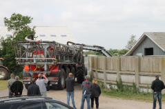
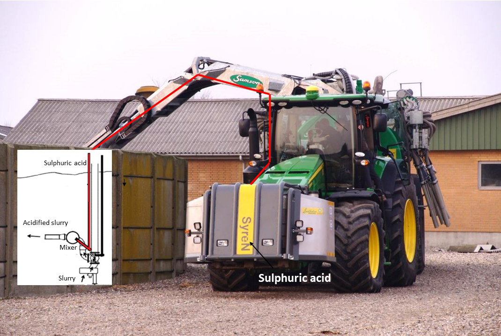

BioCover, a Danish company specializing in the sustainable use of organic fertilizer, has developed an acidification technology that enables 80 percent (%) reduction of methane from slurry management. The technology also reduces ammonia emissions by up to 70% by changing ammonia (gas) to ammonium (salt). Use of this technology protects biodiversity and reduces airborne eutrophication caused by dry and wet depositions of ammonia. Eutrophication, which is an excess of nutrients in a body of water, causes dense plant growth and depletion of oxygen that results in the death of animal life. This acidification technology also reduces air pollution (smog) resulting from ammonia reacting with nitrogen oxides and sulphur oxides to form particulate matter in the air. Air pollution causes more than 400,000 premature deaths in Europe each year.
BioCover has two products that use this technology: SyreN and SyreN+. SyreN is a mobile acidification system for slurry in which sulphuric acid is added to the slurry when the slurry is applied to farm fields. The SyreN+ system adjusts the amount of ammonium nitrogen in the slurry during application by injecting anhydrous ammonia and turning the ammonium nitrogen into ammonium, thereby customizing the nitrogen to phosphorus (N:P) ratio in the slurry to meet the individual crop need. BioCover's SyreN System is now treating 20% of all slurry in Denmark. It has recently been established as an EU Best Available Technology (BAT) standard. BioCover and the SyreN System have won six international awards and have been featured in several publications and published reports. Reports can be found at http://balticslurry.eu/.
|  | |
| SyreN | SyreN+ |
|  | |
| Acidification of the slurry |
|